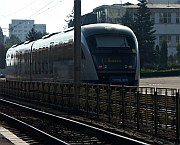

Disclaimer: These pages are not actively maintained, and some of the practical information on the site is out of date. I am working on a new version of the site that will focus more on my photos and memories of travel in Southeast Europe, and less on practical details that too easily become obsolete. In the meantime, please treat the information here with caution.
Romania :: Frequently Asked Questions
Some general questions about the Balkans are answered in the Overview section.
Questions
- Is it safe?
- The train system sounds a bit complicated - what do I need to know?
- Where can I find places connected to Dracula?
Answers
-
Is it safe?
Some guidebooks make Romania sound like a rather scary place in which to travel, with references to "Europe's wild west" and a "frontier atmosphere". Romanians themselves sometimes contribute to this impression - I found that many of them feel that their country has become a dangerous place in recent years and were concerned that I was travelling alone. On the whole, I don't think Romania is any more dangerous than the average European country provided you exercise common sense.
Many of the safety worries focus on Bucharest. Some travellers report feeling nervous there, but usually this seems to be based on some sort of vague unease, or stories that they heard from a guy in a pub about something that happened his second cousin's best friend, rather than any actual event. I have only spent a few days in the city, so I certainly don't claim to be an expert, but it didn't strike me as any more threatening than other cities of its size. The main train station (Garǎ de Nord) had a bad reputation a few years ago, but seems to have been cleaned up quite a bit; in fact it is a reasonably relaxing place once you are inside the main concourse. You are more likely to have problems just outside the station and around the ticket offices. Be wary of anyone who approaches you here, for example offering to "help" you buy a ticket, or claiming to be the police. Some people suggest that it's best not to take a taxi from right outside the station - use the metro or walk a short distance before getting a taxi.
-
The train system sounds a bit complicated - what do I need to know?
Romania has by far the most useful train network of any Balkan country, so it's worth knowing how to get the best out of it.
- Most passenger services are run by CFR, the national rail operator, but there is also a private company called RegioTrans. Most RegioTrans service are on branch lines rarely used by tourists, but they have recently started a daily Bucharest-Braşov-Sibiu service in competition with CFR.
- The cheapest class of train (personal) is very slow indeed, but can be useful for short journeys. In theory it is possible to travel quite long distances on some of these trains, but you would need to be both masochistic and very short of funds to do this. You may well arrive earlier at your destination by waiting an hour for a faster train than by jumping on the next personal.
- The next type of train is optimistically, some would say humorously, called accelerat. If you travel around Romania by train you will probably find yourself using these a lot, with plenty of locals for company. They don't stop at every hamlet like the personal trains, but do stop anywhere of any importance. Most of the carriages have clearly seen better days but aren't completely decrepit.
- There is not much difference between Rapid and Intercity trains. They only stop at main stations and the carriages are usually quite comfortable, especially in InterCity. They are on the expensive side for Romanians but still quite cheap by Western European standards.
- All Accelerat, Rapid and Intercity trains (that is, almost all the trains you are likely to use) have compulsory seat reservations. If you buy tickets as you go the reservation will be included automatically; if you are are using a pass you should buy a separate reservation for a small fee.
- Most towns have central CFR offices where you can buy tickets until the day before your journey (or possibly until 24 hours before your journey - opinions differ). If you know when you will be travelling, this can be a more relaxing experience than queuing at a station - although I'm told that recent computerisation has greatly simplified the process of buying tickets in stations.
- Timetables displayed in stations are often of little use. They only show the final destination of each train, often a name that will mean nothing to you unless you really know the country. It's often easiest to pop into an internet cafe and check the online timetable - see the Links page.
-
Where can I find places connected to Dracula?

Bran CastleTo be honest, I was tempted to avoid the topic of Dracula completely - it's not one of the things that attracts me to Romania. But I seem to be in a minority, so here goes:
- Poienari Castle probably has the strongest claim to being the "real" Dracula's castle - that is, the castle of Vlad the Impaler, the historical figure who inspired some (rather minor) features of Bram Stoker's Dracula. It is in a fairly remote location north of Curtea de Argeş in Wallachia (not Transylvania).
- Bran Castle, near Braşov in Transylvania, is sometimes marketed as "Dracula's Castle". Vlad certainly didn't own this castle; he may have attacked it once. The Dracula connection seems to be based mainly on the fact that the castle looks like the kind of place a vampire might live in, and is relatively easy for foreign tourists to get to.
- Vlad's native town is Sighişoara in Transylvania; the house he was born in is now a restaurant.
- Much of his early life was spent in the Princely Court at Târgovişte in Wallachia, northwest of Bucharest.
- Vlad's probable tomb is in Snagov Monastery, near Bucharest.
- Bram Stoker's novel placed the castle of the fictional Dracula in a real location near Bistriţa in the north of Transylvania; apparently the geographical aspects of the novel are quite accurate. This is quite a long way from any of the locations associated with Vlad the Impaler. There was never a real castle in this location.
The Romanian historian Lucian Boia says of Dracula:
Towards the myth of Dracula, which has emerged rather unexpectedly from their point of view, the Romanians cannot decide what attitude to take. In the first place, the transformation of one of their princes into a vampire inevitably arouses dissatisfaction. On the other hand, they have no wish to discourage tourism. If foreigners want Dracula, let them have him!